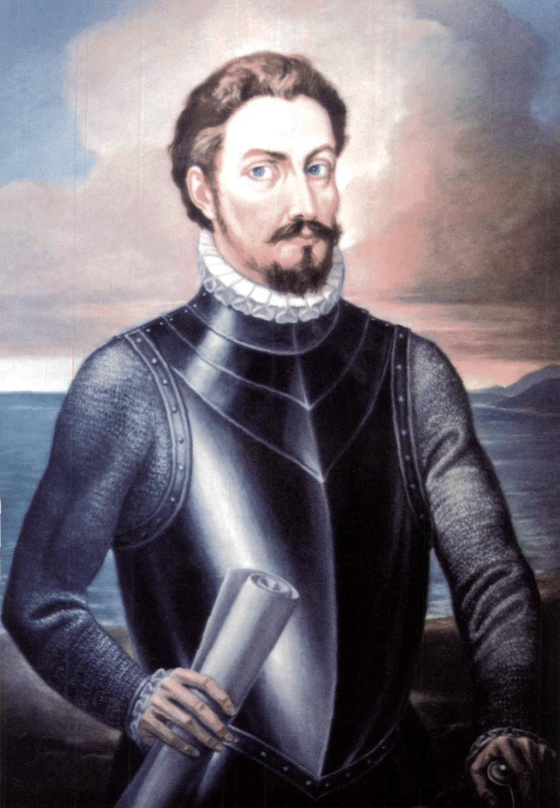

תקציר
קולומביה מסמנת בפרויקט מעבר חשוב מן האיים הקריביים אל יבשת דרום אמריקה עצמה. החוף הקריבי של קולומביה היה אחד השערים שדרכם נכנסו הספרדים לעולם יבשתי רחב, עשיר בעמים, זהב, נהרות, הרים ונתיבי מסחר.
בתקופה הספרדית נקשר האזור לשם גרנדה החדשה. קרטחנה דה אינדיאס הפכה לנמל קריבי חשוב, ובוגוטה התפתחה בלב הרמות של האנדים כמרכז שלטוני ודתי.
סיפור ההגעה אל היעד
לאחר שהספרדים הכירו את האיים הקריביים, המבט שלהם החל לנוע אל היבשת שמדרום וממערב. מעבר לפנמה ולחופי הים הקריבי נפרש עולם גדול בהרבה מן האיים: נהרות רחבים, יערות, הרים ועמים בעלי מערכות פוליטיות וכלכליות משלהם.
ההגעה לחופי קולומביה לא הייתה רגע יחיד כמו הנחיתה באיי בהאמה, אלא תהליך מתמשך של מסעות חוף, מיפוי, חיפוש נמלים והתקדמות מן הים אל פנים הארץ. ספינות ספרדיות נעו לאורך החוף הקריבי, חיפשו עגינות בטוחות, מידע מקומי ומסלולים אל אזורי זהב.
קרטחנה דה אינדיאס הפכה לאחת מנקודות המפתח של הסיפור הזה. עבור הספרדים היא הייתה שער אל היבשת; עבור העמים המקומיים זו הייתה תחילת חדירה של כוח זר אל עולם קיים של מסחר, מנהיגות, מלחמות ובריתות.
בהמשך נמשך הדמיון הספרדי אל פנים הארץ ואל הסיפורים על עושר עצום. כך התחזקה אגדת אל דוראדו — לא רק סיפור על זהב, אלא כוח מניע שדחף מסעות אל הרמות, אל אזורי המויסקה ואל בוגוטה.
אטימולוגיה ושמות היסטוריים
קרטחנה דה אינדיאס
קרטחנה דה אינדיאס הייתה אחד הנמלים החשובים ביותר באימפריה הספרדית באמריקה. מיקומה על החוף הקריבי הפך אותה לשער ימי, מרכז מסחרי ומקום אסטרטגי להגנה ולשליטה.
בוגוטה והפיכתה לבירה
בוגוטה התפתחה באזור הררי גבוה בלב ארץ המויסקה. הספרדים ראו באזור זה מרכז חשוב לשליטה על פנים הארץ, ולא רק על החוף. עם הזמן נעשתה העיר למרכז שלטוני מרכזי של גרנדה החדשה ובהמשך לבירת קולומביה.
דגל קולומביה
דגל קולומביה כולל שלושה פסים אופקיים: צהוב, כחול ואדום. הצהוב הוא הפס הרחב ביותר, והדגל קשור למסורת הרפובליקנית של צפון דרום אמריקה ולמורשת העצמאות.
סמל קולומביה
סמל קולומביה משלב סמלים של חירות, עושר, ים, ריבונות ומורשת רפובליקנית. הוא כולל קונדור, מגן, פירות, ספינות וסמלים נוספים.
גאוגרפיה ואקלים
קולומביה מגוונת במיוחד: חוף קריבי, חוף פסיפי, הרי אנדים, יערות גשם, נהרות רחבים ורמות גבוהות. הגיוון הזה השפיע מאוד על האופן שבו הספרדים התקדמו בה — מן החוף אל פנים הארץ.
המויסקה והצ׳יבצ׳ה
לפני הגעת הספרדים חיו באזורי קולומביה עמים רבים. בין החשובים שבהם היו המויסקה, חלק מן העולם התרבותי הצ׳יבצ׳י. הם חיו ברמות של האנדים ופיתחו מערכות פוליטיות, חקלאיות, מסחריות וטקסיות מורכבות.
המויסקה היו קשורים במיוחד למסורות של זהב, מלח, מסחר וטקסים. המפגש הספרדי איתם היה אחד המקורות החשובים לצמיחת אגדת אל דוראדו.
אל דוראדו
אל דוראדו היא אחת האגדות המפורסמות ביותר בתולדות הכיבוש הספרדי. מקורה קשור בין השאר לטקסים ולסיפורים על שליטים, זהב ואגמים באזור המויסקה.
עבור הספרדים, אל דוראדו הפכה לחלום של עיר או ארץ עשירה בזהב. החלום הזה דחף מסעות קשים אל פנים היבשת, ולעיתים גרם לאנשים לראות בכל שמועה מקומית הבטחה לעושר עצום.
הקשר לפנמה ולבלבואה
פנמה הייתה שער מרכזי אל דרום אמריקה הצפונית. לאחר שבלבואה ראה את הים הדרומי, התברר לספרדים שהמרחב שמדרום וממערב לקריביים גדול בהרבה מכפי שחשבו. קולומביה, ובעיקר החוף הקריבי שלה, השתלבה ברשת המסעות שיצאו מפנמה, מהיספניולה ומן האיים.
גילויים עיקריים מנקודת המבט האירופית
ציר זמן קצר
מורשת כיום
קולומביה המודרנית נושאת שכבות רבות: עמים ילידיים, נוכחות ספרדית, ערים קולוניאליות, מסחר קריבי, מרחב אנדי וזהות רפובליקנית. בפרויקט זה היא מסמלת את המעבר מן האיים אל היבשת ואת פתיחת הפרק הדרום־אמריקאי במסעות הספרדיים.